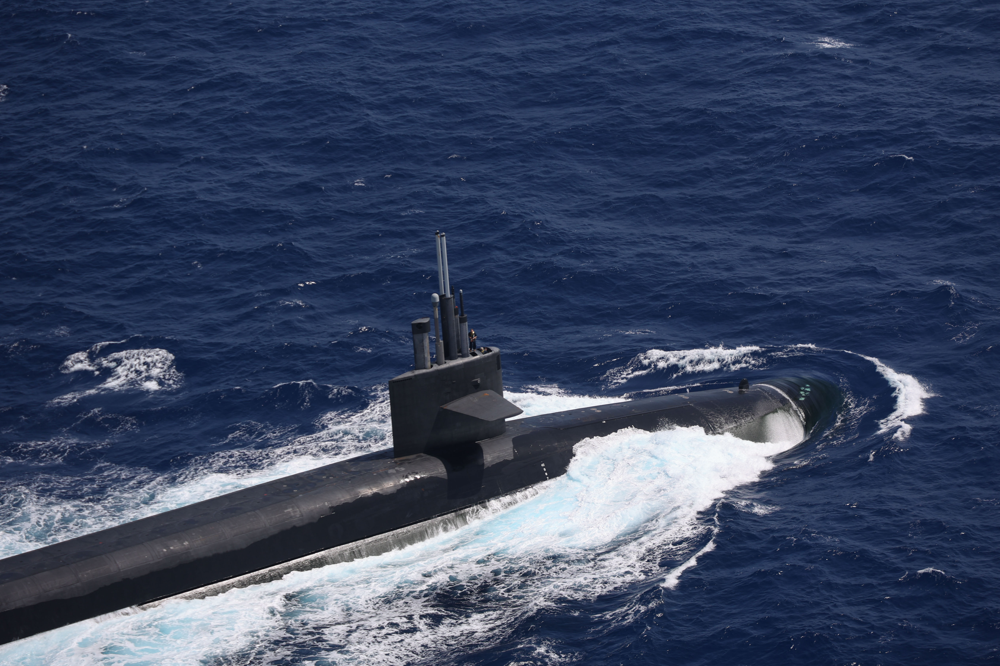

Welcome to Battle Submarines!

Battle Submarines advances the classic battleship warfare experience by (literally) adding depth, movement, and strategy.
Prepare for an underwater adventure as you engage in decisive battles with your opponents. Navigate your submarines, plan your attacks, and aim for victory!
Host or Join a Game
Host Game
Available Games
- Alex's game (2/8 players)
- 12345 (1/8 players)
- No active games found
How to Play
- During the first phase, each player tactically places their submarines on their section of the 3D grid.
- In live gameplay, each player makes up to three moves to position their submarines.
- You can move higher or deeper into the ocean, forwards or backwards, and turn, but each cost a move.
- Once everyone has finished moving, each player can fire a weapon or launch a sonar pulse from a submarine.
- The torpedo can only be launched in the direction you are facing, so plan your moves carefully.
- There are many ways to get information, such as close-range radar and torpedo hits, so be careful and pay attention!
- When a submarine is more than half damaged, it is unable to move, but can still turn and fire
- When a submarine is fully damaged, it is destroyed and removed from the game.
- The playing area periodically shrinks until the last player remains. Good luck and have fun!
| Player | Wins | Kills |
|---|---|---|
| SeaWolf | 3 | 8 |
| Alasticass | 1 | 3 |